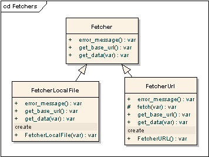
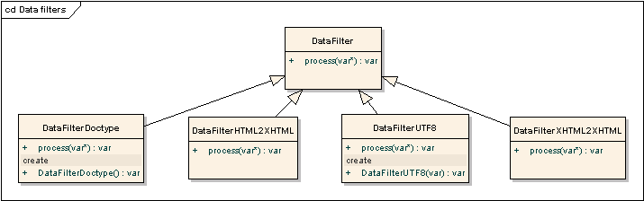
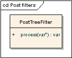
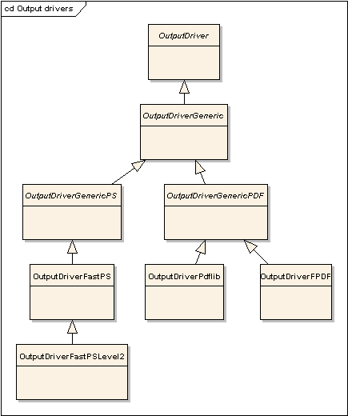

Beware: GLOBALS!
At the moment, the layout/conversion engine makes use of several global variables:
- $g_config array (in particular, $g_config['renderforms'], $g_config['renderlinks'], $g_config['renderimages'],
$g_config['debugbox'], $g_config['mode'], $g_config['cssmedia'] and $g_config['draw_page_border']
elements for all output methods and $g_config['ps2pdf'] and $g_config['transparency_workaround'] for
'fastps' output method.
- $g_px_scale
- $g_pt_scale
Please take this into account while using API. We're planning to get rid of these globals eventually. For a while,
you may initialize these global with the code from samples above.
Also, there's some global items script initializes itself:
- $g_box_uid
- $g_colors
- $__g_css_manager
- $__g_css_handler_set
- $g_encoding_aliases
- $g_frame_level
- $g_font_resolver
- $g_font_resolver_pdf
- $g_html_entities
- $g_image_cache
- $g_last_assigned_font_id
- $g_manager_encodings
- $g_media
- $g_predefined_media
- $g_stylesheet_title
- $g_tag_attrs
- $g_unicode_glyphs
- $g_utf8_converters
There's no need to initialize or modify these variables; just don't accidentally overwrite them. Some of them
are here for "historical" reasons and will be eventually removed. Some are here due lack of static class variables
in older PHP versions.
Conversion pipeline
PipelineFactory is a simple factory class simplifying building of
Pipeline instances;
create_default_pipeline() will build a simple ready-to-run conversion pipeline. The usage of
PipelineFactory is not required; you may create the
Pipeline object and fill
the appropriate fields manually.
class PipelineFactory {
function create_default_pipeline();
}
Pipeline class describe the process of conversion as a whole; it contains references to classes, described
above and is responsible for calling them in correct order and error handling.
class Pipeline {
var $fetchers;
var $data_filters;
var $parser;
var $pre_tree_filters;
var $layout_engine;
var $post_tree_filters;
var $output_driver;
var $output_filter;
var $destination;
function Pipeline();
function configure($options);
function process($data_id, &$media);
function process_batch($data_id_array, &$media);
function error_message();
function &get_dispatcher();
}
Description of interfaces and classes
Almost all interfaces described below include
error_message method.
It should return the user-readable description of
the error. This description MAY contain HTML tags, but should remain
readable in case tags are removed.
Fetcher interface provides a method of
fetching the data required
to build a document tree. Normally, classes implementing this interface would
fetch an HTML/XHTML string from somewhere (e.g. from remove HTTP server,
local file or database). Nevertheless, it MAY fetch ANY data provided that
this data will be understood by parser. The pipeline object may contain
several fetcher objects; in this case they're used one-by-one until
one of them return non-null value.
It is assumed that if you need to get data from non-standard places (e.g. from template engine or database), you
should implement Fetcher in your own class.
Note that the get_data method returns the FetchedData object (or one of its descendants) instead of
HTML string!

- get_data($data_id)
-
Fetches the URL and returns page content and supplementary information.
- $data_id – URI identifying the page location
- get_base_url()
- Returns URL to be used as the base url when resolving relative links
FetcherURL reads remote HTML page via HTTP or HTTPS.
FetcherLocalFile reads local file; in this case $data_id should contain path to the file to be read.
DataFilter interface describes the filters modifying the raw input data.
The main purpose of these filters is to fix the raw data so that it can be
processed by parser without errors.

- process($data)
-
Processes the FetchedData object and returns another FetchedData object with (probably) modified content
- $data – FetchedData object
DataFilterDoctype tries to detect the mode this document should be rendered in (HTML, XHTML, QUIRKS).
DataFilterHTML2XHTML
The precise description of this filter actions are beyond the scope of this
document. In general, it makes the input document a wellformed XML document
(possibly throwing out invalid parts, by the way). Note that it is achieved
by extensive use of regular expressions; no XML/HTML parsers involved
in conversion at this stage.
DataFilterXHTML2XHTML does some additional XHTML processing required for the
script; for example, it removes comments, SCRIPT tags and does some other steps simplifying
document processing.
DataFilterUTF8 converts content from the source encoding to UTF-8. It is a good idea
to use this filter if you're not limited by ASCII encoding.
Parser interface provides a method of building the DOM tree from the
filtered data.

- process($data)
-
Processes the FetchedData object and returns the document tree (somewhat similar to DOM) object.
- $data – FetchedData object
ParserXHTML
PreTreeFilter interface describes a procedure of document tree transformation executed before
the layout engine starts.

- process($data)
-
Make some modifications in document tree (in-place) before the layout engine have been run.
- $data – Document tree object
PreTreeFilterHTML2PSFields handles the processing
of special fields (such a date, page count, page number, etc.).
PreTreeFilterHeaderFooter adds script-generated header and footer to the document tree.
LayoutEngine interface of a class processing
of the document tree and calculating positions of page elements. In theory, different implementations
of this interface will allow us to use "lightweight" layout engines in case we do
not need full HTML/CSS support.

- process($data)
-
Runs the layout process (document tree object is modified in-place).
- $data – Document tree object
LayoutEngineDefault - a standard layout engine HTML2PS uses.
PostTreeFilter interface describes a procedure of document tree transformation executed after
the layout engine completes.

- process($data)
-
Apply some changes to document tree (in-place) after the layout engine have been run.
- $data – document tree object
OutputDriver interface contains device-specific functions - drawing, movement, fonts selection, etc.
In general, description of this interface is beyond the scope of this document, as users are not intended
to implement this interface themselves. Instead, they would use pre-defined output drivers described below.

OutputDriverPDFLIB outputs PDF using PDFLIB.
OutputDriverFPDF outputs PDF using FPDF
OutputDriverFastPS handles Postscript Level 3 output.
OutputDriverFastPSLevel2 handles Postscript Level 2 output.
OutputFilter interface describes the filter applied to generated PS or PDF file.

OutputFilterPS2PDF runs the PS2PDF utitity on the generated file.
OutputFilterGZIP compresses generated file using ZLIB.
Destination interface describes the "channel" object which determines where the final output file
should be placed.

DestinationBrowser outputs the generated file directly to the browser.
DestinationDownload outputs the generated file directly to the browser.
Unlike DestinationBrowser, this class send headers preventing the file from being opened directly
in the browser window.
DestinationFile saves generated file on the server side.
Implementing your own fetcher class
Sometimes you may need to convert HTML code taken from database or from other non-standard sources.
In this case you should implement Fetcher interface yourself, returning the string to be converted
from the get_data method. Additional parameters (like database connection settings,
template variables, etc) may be specified either as globals (not recommended, though), passed as a parameters
to constructor of fetcher object or as $dataId parameter of get_data method.
Keep in mind that if you're including files from your HTML code (e.g. stylesheets or images), you should either
return null from your fetcher for URL of these files, or handle them yourself. Unless you do it,
these files will not be available.
class MyFetcherLocalFile extends Fetcher {
var $_content;
function MyFetcherLocalFile($file) {
$this->_content = file_get_contents($file);
}
function get_data($dummy1) {
return new FetchedDataURL($this->_content, array(), "");
}
function get_base_url() {
return "";
}
}
Also see sample.simplest.from.file.php and sample.simples.from.memory.php files.
Class dependencies
The pipeline object contains the following:
- one or more objects implementing Fetcher interface;
- zero or more objects implementing DataFilter interface;
- one object implementing Parser interface;
- zero or more objects implementing PreTreeFilter interface;
- one object implementing LayoutEngine interface;
- zero or more objects implementing PostTreeFilter interface;
- one object implementing OutputDriver interface;
- one object implementing Destination interface;
No other dependencies between class in interfaces (except "implements").
Note that order of filters is important; imagine you're using some king of tree filter which adds header block
containing HTML2PS-specific fields. In this case you must add this filter before PostTreeFilterHTML2PSFields, or
you'll get raw field codes in generated output.